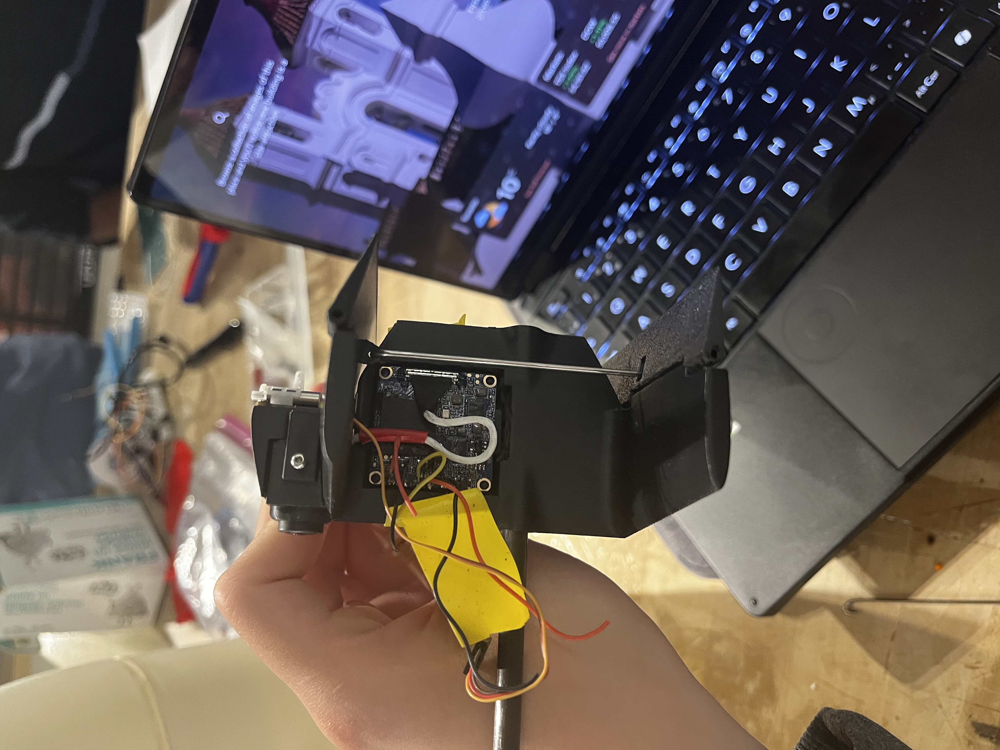
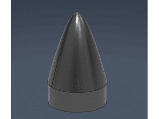
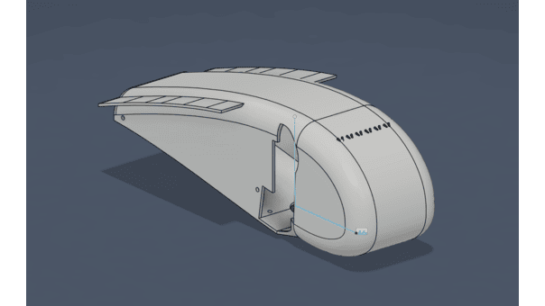

Overview
As part of the RSX Aerial Design team, we compete in the annual CANSAT competition hosted by the American Astronautical Society (AAS). This year's task was to create an autonomous glider to drop an egg within a designated area. The glider is launched over 700m into the air by a rocket, before releasing, deploying, and navigating autonomously towards the drop zone. My role in this project was focused on the mechanical side, where I designed, iterated and manufactured much of the glider body, payload nosecone and tail.
Tools Used
Pictures




Results
- Competition results scored 70% overall
- Main complications arose due to gaps between the nosecone and payload container during launch
Challenges + Solutions
- Integration and manufacturing of mechanical components
- Reconciling CAD models to manufacturing limitations
- Working under time pressure and with a large design team